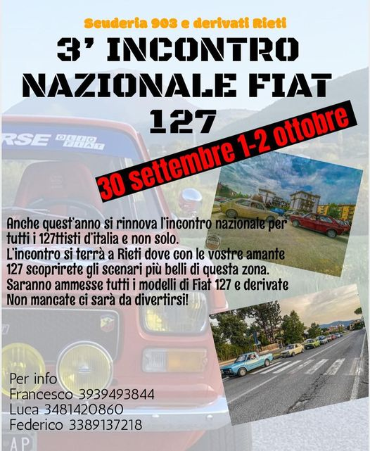

Resoconto del III incontro nazionale Fiat 127 e derivate Rieti 2022
6 Ottobre 2022

Il nostro gruppo ha partecipato con molto entusiasmo al 3° incontro FIAT 127 a Rieti il 30 settembre, 1 e 2 ottobre 2022. Organizzato dalla "Scuderia 903 e derivati" di Rieti, si può considerare come l'unico raduno nazionale annuale di Fiat 127 e derivate. Viene sempre organizzato l'ultimo fine settimana di settembre/inizio ottobre.
Dei membri campani hanno partecipato:
- Alberto (Fiat 127 special prima serie)
- Antonio (Fiat 127 unificata)
- Antonio e Luigi ci hanno raggiunto sabato (Fiat 127 prima serie)
- Emanuele ci ha raggiunto domenica (Fiat 127 special prima serie)
- Giovanni (Fiat 127 special prima serie)
- Massimo (Fiat 127 Top)
- Pietro (Fiat 127 sport)
- Roberto (Fiat 127 seconda serie)
- Vincenzo (Fiat 127 prima serie)
Si è poi aggiunto al gruppo e presente alla partenza l'amico Gaetano da Caltanissetta! (Fiat 127 Scioneri prima serie)
Inutile dire che è stata una bella esperienza per tutti, un momento per fare gruppo, conoscerci meglio e conoscere nuova gente appassionata come noi della mitica Fiat 127. E' stata un'esperienza che consiglio a tutti coloro che stanno leggendo.
Ecco il resoconto dell'evento diviso per giornate.
Venerdì 30 settembre
Il nostro gruppo si da appuntamento alle ore 15 per la partenza presso la stazione San Nicola Est sulla E45 all'altezza di San Nicola La Strada.


Ci aspettano 266Km fino all'albergo che ci ospita a Rieti. Il gruppo è frizzante ed ansioso di partire.


Arriviamo in albergo, una cambiata e siamo pronti per la serata. Ci aspettano gli amici di Rieti alla Pinzeria BBuona.
Tante 127 presenti, tante persone, due chiacchiere ed il tempo vola.


Di seguito tutte le foto della prima giornata:
Sabato 1 ottobre
Ci svegliamo presto, facciamo colazione, lucidiamo le 127 che sono state la notte all'aperto nel parcheggio dell'hotel.


Ne approfittiamo per fare una foto di gruppo e partiamo alla volta del parcheggio della Pinzeria BBuona. Ci aspetta un'intera giornata fuori.


Al parcheggio sono presenti tante 127. Scattiamo qualche foto.


La prima parte del programma prevede di attraversare la valle del Turano, costeggiare il lago ed arrivare alla Locanda Belvedere dove ci aspettano per il pranzo.

Si parte, una serie di belle curve, si costeggia il lago, bellissimi scorci.


Arriviamo ad Ascrea alla Locanda Belvedere. Occupiamo l'intero parcheggio antistante. Una serie di 127 di tutti i colori e modelli. Scambiamo battute e si pranza.


Omaggiamo i presenti della "Zizzona di Battipaglia" !!


La seconda parte della giornata prevede di raggiungere la piazza di Cittaducale, antica cittadina medievale molto suggestiva.
 .
.
Ci mettiamo in viaggio ed in serata arriviamo al paese.


Dopo la cena torniamo in albergo a riposare per l'indomani.
Ecco le foto della seconda giornata:
Video resoconto della seconda giornata - original link
Domenica 2 ottobre
Dopo una bella dormita, scaldiamo i motori e raggiungiamo Porta Romana a Rieti.
Bellissima location, le 127 occupano intera piazza.


Scortati dalla polizia municipale di Rieti in una splendida Alfa 33 dell'epoca, attraversiamo il centro storico di Rieti in carovana


Il programma è raggiungere la piazza del paese di Leonessa per l'aperitivo lungo il corso.


Arriviamo nella splendida piazza di Leonessa


Foto del nostro gruppo e foto con tutti i partecipanti.


Ripartiamo in direzione Torritta di Amatrice al ristorante La Valle


Dopo un ottimo pranzo a base di specialità locali e la torta ...


... salutiamo tutti e ripartiamo in direzione Campania

Di seguito tutte le foto terza della giornata:
Video resoconto della terza giornata - original link
Vuoi contattarci?
Se possiedi una Fiat 127 e sei della Campania, sei il benvenuto!
Vieni a conoscerci ad un nostro incontro!

© 2022 - i Ragazzi del 127